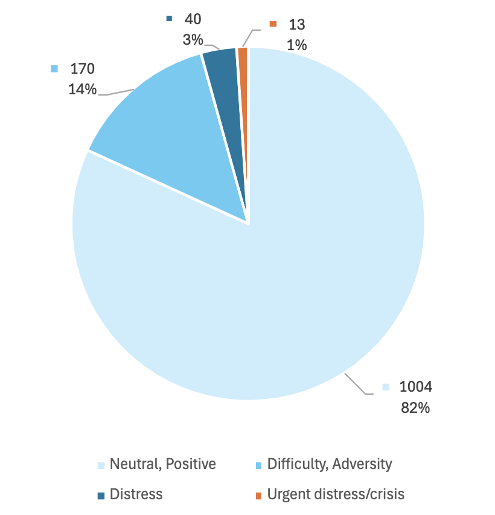
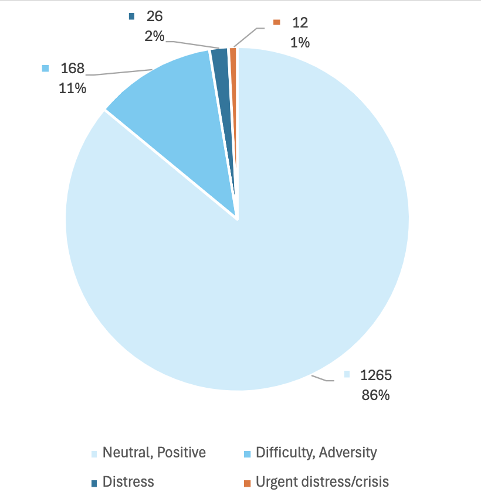
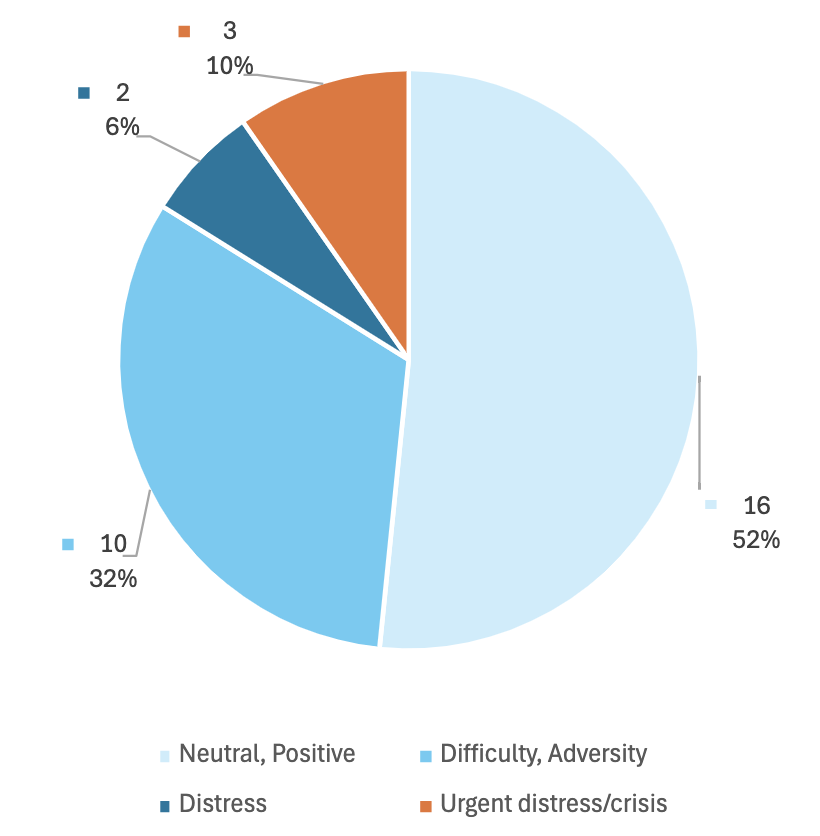

Veterans did have a stronger preference for an inpatient or outpatient mental health counselor or primary care physician as compared to preferences for other correspondents (such as a provider from a Caring Contacts program, a fellow veteran they had not met, a crisis worker, or a non-provider from a Caring Contacts program)
Examples of Successful Caring Contacts Programs
Some examples of the potential breakdown of message content from participant text replies across multiple Caring Contacts studies. Your results might look different, let us know so we can add your data for others to learn from!
Caring Contacts at St. Luke’s Health System in partnership with Idaho Crisis and Suicide Hotline
Caring Contacts has been successfully implemented at the St. Luke’s Health System for over 3,000 adolescent and adult patients, plus health system staff, physicians, and advanced practice providers. This program has been developed over the course of three pragmatic randomized control trials, the Mental Health Among Patients, Providers, and Staff (MHAPPS) Trial, the Suicide Prevention Among Recipients of Care (SPARC) Trial and the Comparing Suicide Prevention Interventions to Guide Follow-up Care (SPRING) Trial. St. Luke’s and the Idaho Crisis and Suicide Hotline partner to deliver a non-research Caring Contacts program currently available for health system staff, with the goal of expanding to non-research patients in the near future.
Caring Contacts with active duty or veteran members of US Army or Marine Corps (MCP)
To test the effectiveness of augmenting standard military healthcare with Caring Contacts delivered via text message to reduce suicidal thoughts and behaviors over 12 months, a randomized clinical trial was conducted at 3 military installations in the southern and western United States with Soldiers and Marines.
- Key characteristics of this study
- Received 1227 replies from N=329 participants who got Caring Contacts
- All active duty or veteran members of US Army or Marine Corps
- Required recent suicide attempt or ideation on Scale for Suicidal Ideation-Current
- 11 text messages sent over 12 months
- It took about 2 hours per day to monitor and respond to messages
The breakdown of message content from participant text replies across this study.
CARE Study
To evaluate the effectiveness of culturally-adapted Caring Contacts in reducing suicidal ideation, suicide attempts, and suicide-related hospitalizations, research was conducted in partnership with Five Native communities in Alaska, the Northern Plains, and the Southern Plains, including 4 tribal communities and 1 tribal health organization. The 25 messages were authored by the local staff so that they reflected local culture and the voice and community role of that author.
- Key characteristics of this study
- Received 1372 replies from N=355 participants who got Caring Contacts
- American Indian/Alaska Native population, 18+ years old
- Required high score on SIQ or Suicide Attempt in the last year
- 25 text messages sent over 12 months
- Staff Involvement: 2 authors at each of 5 sites, with 3 admin support staff
- It took 1 to 2 active hours a day to monitor and respond to messages at each site with 20-100 participants
The breakdown of message content from participant text replies to caring contacts messages in this study 
The breakdown of message content of unprompted messages from participants in this study
Caring Contacts feedback assessment in a VA Emergency Department
There has been extensive research into the preferences of veterans for their Caring Contacts. Here we have summarized a few of the relevant studies which may provide more guidance as your organization develops your pre-scheduled messages.
Survey of the preferences regarding physical Caring Contact letters by veteran patients admitted to an in-patient unit (these participants did not actually receive Caring Contacts). In general, they found that some strong preferences were shown, and that demographic-specific preferences were not so strong that it would greatly impede intervention implementation. There were minor differences between ages, genders, and races, but no differences between various numbers of combat deployment or military ranks. (Keep in mind that only 18 of the 154 participants in this study were women, and over half were white.)
Author:
Modality:
- First choice to last choice as follows: letter, postcard, greeting card, email, text.
- More women's first choice was a greeting card.
- Male participants chose text or email as their first choice more than women (of whom, 0 chose text or email as their first choice).
- More older veterans said they prefer physical mail.
- The authors note that this may be due to the age of their study sample being higher and smartphone use being lower. Another study with active duty military members have found that three-quarters preferred email. And in recent studies with veteran and non-veteran participants, texts was the preferred method, followed by email.
- Tailoring the messages to fit the population served will be important for increased effectiveness.
- The type of stamp had no bearing on the appeal of the letter
Typed vs handwritten:
A little over half said they were fine with a letter being typed, and if anything were to be handwritten, the signature and perhaps a short personal note at the bottom of the card were most important.
For younger veterans, having the physical cards be handwritten was more important than for the older veterans. Younger respondents also liked the idea of colorful envelopes.
Frequency:
just under half said monthly was the best option, followed by quarterly, weekly or biweekly, individual schedule, and finally the last choice was annually.
Duration:
just over one-third said one year was preferred, followed by 6 months, 3 months or less, individual schedule, and the last choice was over a year.
Taper:
two-thirds said they'd like the messages to continue at the same frequency while the other third said they'd like the messages to taper off toward the end.
Holidays:
- When asked to choose from a list, the most frequently indicated day was Veteran’s Day which just over two-thirds chose, followed by their birthday, Memorial Day, Armed Forces Day, July Fourth, Christmas, and 9/11.
- The younger veterans were more likely to indicate Christmas.
- Women were more likely to choose Christmas and Armed Forces Day
- The authors also noted that this preference for Veteran's Day is probably due to the study population.
- Other feedback has suggested that, again, tailoring the messages to fit the population served will be important for increased effectiveness.
Imagery on the physical letter:
Participants showed a strong preference for an image of an American flag and the 5 seals from each branch of military.
Black, White, and multiracial participants were more likely to indicate preference for images of the VA seal and the American flag.
Two-thirds approved of the example letters they were given, and a strong majority recommended their use in the VA and said they thought the letters could help someone who is in distress or feeling suicidal.
A little over half said they thought the messages could make them feel connected to others. A small portion mentioned that the messages might remind them of who to contact if they were having problems. Both of these sentiments have been reiterated by other veteran and non-veteran participants in more recent studies who did actually receive the Caring Contacts intervention.
A couple of participants mentioned concerns about the cost, confidentiality, embarrassment, and that the messages might have their impact lessened by too many being sent. In recent studies, questions regarding these concerns were asked of veteran and non-veteran participants. Only a couple out of a very large sample shared that they had concerns with confidentiality, and even in a study which sent 25 messages, participants indicated that they were content with the number they had received.
- Reger, M. A., Jegley, S. M., Porter, S. A., Woods, J. A., Liu, L., Markman, J. D., & Landes, S. J. (2022). Implementation strategy to increase clinicians’ use of the caring letters suicide prevention intervention. Psychological Services. https://doi.org/10.1037/ser0000637
- Ammerman, B. A., Gebhardt, H. M., Lee, J. M., Tucker, R. P., Matarazzo, B. B., & Reger, M. A. (2019). Differential preferences for the caring contacts suicide prevention intervention based on patient characteristics. Archives of Suicide Research, 1–12. https://doi.org/10.1080/13811118.2019.1632231
- Reger, M. A., Gebhardt, H. M., Lee, J. M., Ammerman, B. A., Tucker, R. P., Matarazzo, B. B., Wood, A. E., & Ruskin, D. A. (2019). Veteran preferences for the Caring Contacts suicide prevention intervention. Suicide & Life-Threatening Behavior, 49(5), 1439–1451. https://doi.org/10.1111/sltb.12528